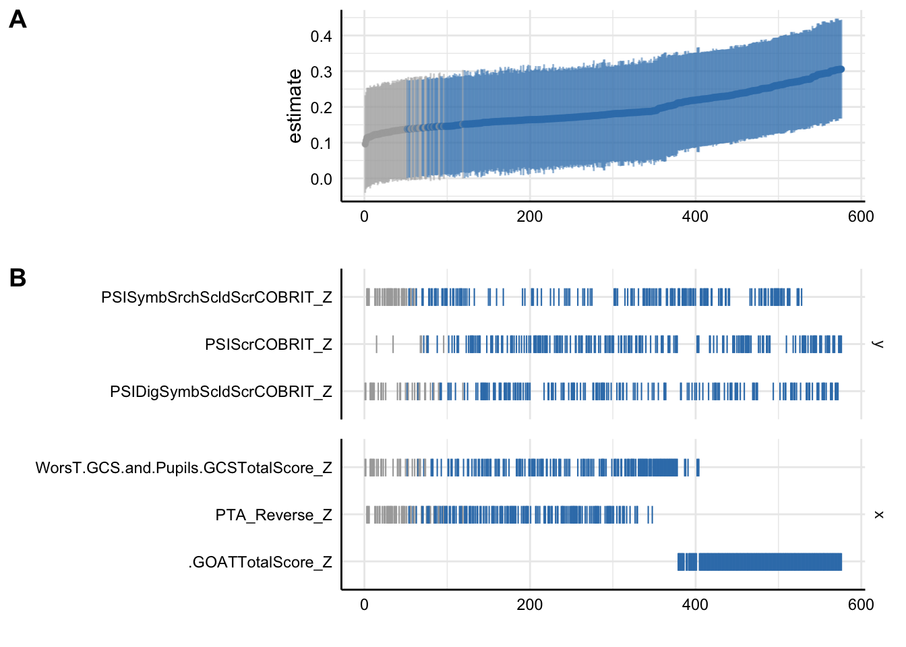
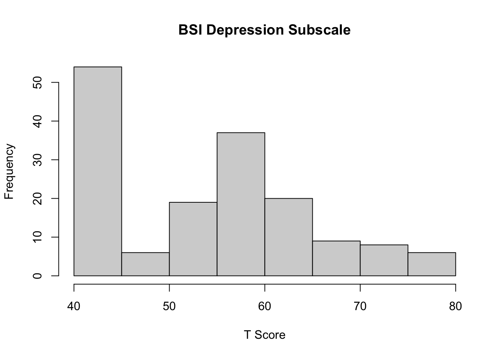
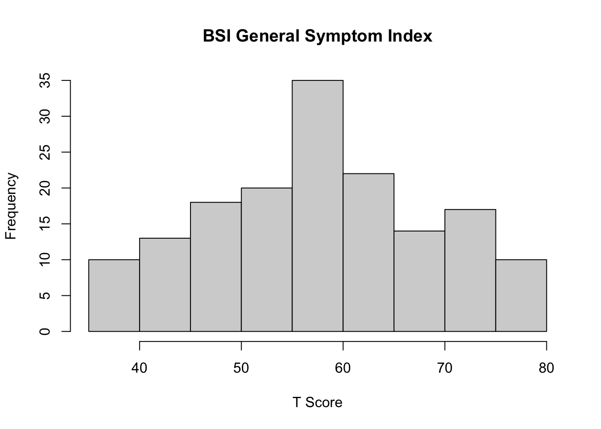

Load all necessary packages and dataframes. For the purposes of this analysis, only Placebo cases will be used.
Specr is the main package used here. Citation post
citation("specr")
To cite 'specr' in publications use:
Masur, Philipp K. & Scharkow, M. (2020). specr: Conducting and
Visualizing Specification Curve Analyses. Available from
https://CRAN.R-project.org/package=specr.
A BibTeX entry for LaTeX users is
@Misc{,
title = {specr: Conducting and Visualizing Specification Curve Analyses (Version 1.0.0)},
author = {Philipp K. Masur and Michael Scharkow},
year = {2020},
url = {https://CRAN.R-project.org/package=specr},
}
#Install and load necessary packageslibrary(stringr)library(lavaan)
Warning: package 'lavaan' was built under R version 4.3.3
This is lavaan 0.6-19
lavaan is FREE software! Please report any bugs.
library(readxl)library(dplyr)
Attaching package: 'dplyr'
The following objects are masked from 'package:stats':
filter, lag
The following objects are masked from 'package:base':
intersect, setdiff, setequal, union
library(tidyr)library(lme4)
Warning: package 'lme4' was built under R version 4.3.3
Loading required package: Matrix
Attaching package: 'Matrix'
The following objects are masked from 'package:tidyr':
expand, pack, unpack
library(ggplot2)library(specr)library(writexl)#load in the dataframe, mv_completemv_complete <-read_excel("mv_complete.xlsx")#load in multiverse_merged.csvmv <-read.csv("multiverse_merged.csv")#filter mv to only include Placebo cases for this analysismv <- mv %>%filter(Randomization.StudyTreatmentCat =="Placebo")#delete any column that has all NA valuesmv <- mv[, colSums(is.na(mv)) <nrow(mv)]
Merge in the GOSE_GCS appendix, which contains information about TBI severity
gose <-read.csv("GOSE_GCS_extended_appendix.csv")#delete the first row. not neededgose <- gose[-1,]#delete scores from the 180 day timepointgose <- gose %>%filter(X.8!="180")#convert the relevant columns to numericgose$PTA <-as.numeric(gose$X.9)#match GUID column to match other dataframes gose$Main.GUID <- gose$X1#filter gose for only rows where X.8 is "30"gose <- gose %>%filter(X.8=="30")#Reverse Code the PTA variable. Subtract 100 from the PTA scoresgose$PTA_Reverse <-100- gose$PTA #Merge the column gose$PTA into mv based on the column mv$Main.GUIDmv <- mv %>%left_join(gose %>%select(Main.GUID, PTA_Reverse), by ="Main.GUID")
Display sample demographics. Print as a table
table(mv$Demographics.GenderTyp)
Female Male
101 276
table(mv$Demographics.RaceCatCOBRIT)
American Indian or Alaskan Native Asian
3 4
Black or African American More than one race
52 3
White
315
table(mv$Demographics.EthnCatCOBRIT)
Hispanic Non-Hispanic
18 359
table(mv$Demographics.MartlPartnerStatusCOBRIT)
Divorced or separated Married (common or civil law)
61 154
Single, never married Widowed
155 7
table(mv$Demographics.LivingSituationPreInjTyp)
Data Missing/Unknown/Refused
1
Lives Alone
69
Lives in a group home/assisted living
1
Lives with friend(s) or roommate(s) or co-habitating
57
Lives with spouse and/or other family member(s)
249
$10,000-$29,999 per year $30,000-$49,999 per year
45 47
$50,000-$99,999 per year Data missing/Unknown/Refused
40 172
Less than $10,000 per year More than $100,000 per year
33 7
None
33
Clean up the Processing Speed Index data. Display summary stats and histograms.
#Show summary stats for the Processing Speed Index level datasummary(mv$PSIScrCOBRIT)
Min. 1st Qu. Median Mean 3rd Qu. Max. NA's
54.00 81.00 91.00 92.69 103.00 143.00 41
hist(mv$PSIScrCOBRIT, main ="Processing Speed Index Raw Scores", xlab ="Raw Score", ylab ="Frequency")
#convert to Z scoresmv$PSIScrCOBRIT_Z <-scale(mv$PSIScrCOBRIT, center =TRUE, scale =TRUE)#Show summary stats for the Processing Speed Index scaled datasummary(mv$PSIDigSymbScldScrCOBRIT)
Min. 1st Qu. Median Mean 3rd Qu. Max. NA's
1.000 6.000 8.000 8.065 10.000 17.000 40
hist(mv$PSIDigSymbScldScrCOBRIT, main ="Processing Speed Index Scaled Scores", xlab ="Scaled Score", ylab ="Frequency")
#Convert to z scoresmv$PSIDigSymbScldScrCOBRIT_Z <-scale(mv$PSIDigSymbScldScrCOBRIT, center =TRUE, scale =TRUE)#Show summary stats for Symbol search scaled datasummary(mv$PSISymbSrchScldScrCOBRIT)
Min. 1st Qu. Median Mean 3rd Qu. Max. NA's
1.000 7.000 9.000 9.202 12.000 19.000 41
#convert to z scoresmv$PSISymbSrchScldScrCOBRIT_Z <-scale(mv$PSISymbSrchScldScrCOBRIT, center =TRUE, scale =TRUE)
Extract the worst GCS score
#show the histogram for the worst GCS scorehist(mv$WorsT.GCS.and.Pupils.GCSTotalScore)
#Show summary stats for the worst GCS scoresummary(mv$WorsT.GCS.and.Pupils.GCSTotalScore)
Min. 1st Qu. Median Mean 3rd Qu. Max. NA's
3.00 9.00 14.00 12.06 15.00 15.00 9
Convert all relevant demographic variables to ordinal factors
#Convert mv$Demographics.AnnualIncomePreInjCat to an ordinal variablemv$Demographics.AnnualIncomePreInjOrdinal <-factor(mv$Demographics.AnnualIncomePreInjCat, levels =c("None", "Less than $10,000 per year", "$10,000-$29,999 per year", "$30,000-$49,999 per year", "$50,000-$99,999 per year", "More than $100,000 per year"), ordered =TRUE)#Convert mv$Demographics.EduLvlUSATypCOBRIT to an ordinal variablemv$Demographics.EduLvlUSATypCOBRITOrdinal <-factor(mv$Demographics.EduLvlUSATypCOBRIT, levels =c("Some elementary School", "Some high school", "High school graduate/GED", "Some college", "Technical, Vocational, or Trade School", "College graduate", "Some graduate school", "Graduate school completed"), ordered =TRUE)mv$Demographics.EduLvlUSATypCOBRITOrdinal <-as.integer(mv$Demographics.EduLvlUSATypCOBRITOrdinal) mv$Demographics.AnnualIncomePreInjOrdinal <-as.integer(mv$Demographics.AnnualIncomePreInjOrdinal)
Generate a new dataframe that only includes complete cases for the variables of interest for this analysis
Standardize the predictor variables. Convert to z-scores
#convert the predictors to z-scoresmv_complete$WorsT.GCS.and.Pupils.GCSTotalScore_Z <-scale(mv_complete$WorsT.GCS.and.Pupils.GCSTotalScore, center =TRUE, scale =TRUE)mv_complete$PTA_Reverse_Z <-scale(mv_complete$PTA_Reverse, center =TRUE, scale =TRUE)mv_complete$.GOATTotalScore_Z <-scale(mv_complete$.GOATTotalScore, center =TRUE, scale =TRUE)
Generate the specification curve for Processing Speed as an outcome. Include three separate predictors and multiple covariates.
# Run specs with custom latent var functionPSI_specs <- specr::setup(data = mv_complete, y =c("PSIScrCOBRIT_Z", "PSISymbSrchScldScrCOBRIT_Z", "PSIDigSymbScldScrCOBRIT_Z"), x =c("WorsT.GCS.and.Pupils.GCSTotalScore_Z", "PTA_Reverse_Z", ".GOATTotalScore_Z"), model =c("lm"), controls =c("Main.AgeYrs", "Main.AgeYrs_Squared", "Demographics.RaceCatCOBRIT", "Demographics.AnnualIncomePreInjOrdinal", "Demographics.EduLvlUSATypCOBRITOrdinal", "Demographics.GenderTyp"))#generate spec resultsPSI_results <-specr(PSI_specs)#save the results as a dataframePSI_results_df <-as.data.frame(PSI_results)#Generate a plot that only breaks down specification by predictors and outcome variables. Control variables are included in the curve, just remain unlabeledplot(PSI_results, choices =c("y", "x"))

#Save the plot to working directoryggsave("PSI_results_curve_y_x_only.jpg")
Saving 7 x 5 in image
#generate a boxplot of the same data. plot(PSI_results, choices =c("y", "x"), type ="boxplot")
#Save the boxplot to working directoryggsave("PSI_results_boxplot_y_x_only.jpg")
Saving 7 x 5 in image
#generate a summary of all the resultsPSI_results_summary <-summary(PSI_results, type ="curve", group =c("y", "x"))#Save the summary as a dataframePSI_results_summary_df <-as.data.frame(PSI_results_summary)#Download as an excelwrite_xlsx(PSI_results_summary_df, "PSI_results_summary_df.xlsx")
Now, extract the largest and smallest r squared value from all the possible models. Generate a ratio of the two.
#Pull the largest r2 valuelargest_r2_value <-max(PSI_results_df$fit_adj.r.squared)smallest_r2_value <-min(PSI_results_df$fit_adj.r.squared)r2_ratio_PSI <- largest_r2_value / smallest_r2_valuer2_ratio_PSI
[1] 65.1447
#print the model that corresponds to the largest valueprint(PSI_results_df$formula[PSI_results_df$fit_adj.r.squared == largest_r2_value])
#extract largest value from latent_model_dataframe$estimatelargest_b_value_PSI <-max(PSI_results_df$estimate)smallest_b_value_PSI <-min(PSI_results_df$estimate)b_ratio_PSI <- largest_b_value_PSI / smallest_b_value_PSIlargest_b_value_PSI
[1] 0.3057645
smallest_b_value_PSI
[1] 0.09613164
b_ratio_PSI
[1] 3.180685
#print the model that corresponds to the largest valueprint(PSI_results_df$formula[PSI_results_df$estimate == largest_b_value_PSI])
#Save results as an excel filewrite_xlsx(PSI_results_df, "PSI_results_df.xlsx")
Show summary statistics for the Disability Rating Scale. Reverse code it so that higher scores on the DRS reflect less disability.
#summary stats and histogram for the DRSsummary(mv_complete$DRS.DRSTotalScore)
Min. 1st Qu. Median Mean 3rd Qu. Max.
0.000 1.000 1.000 2.138 3.000 15.000
hist(mv_complete$DRS.DRSTotalScore, main ="Disability Rating Scale Total Score", xlab ="Total Score", ylab ="Frequency")
#Reverse and scale the DRS scores so that higher scores reflect less disability, rather than more disabilitymv_complete$DRS_Scaled <-30- mv_complete$DRS.DRSTotalScore#Generate a composite variable with the satisfaction with life scalemv_complete$SWLS_DRS_Composite <- (mv_complete$SWLSTotalScore + mv_complete$DRS_Scaled) /2#Convert all three variables to z-scoresmv_complete$SWLSTotalScore_Z <-scale(mv_complete$SWLSTotalScore, center =TRUE, scale =TRUE)mv_complete$DRS_Scaled_Z <-scale(mv_complete$DRS_Scaled, center =TRUE, scale =TRUE)mv_complete$SWLS_DRS_Composite_Z <-scale(mv_complete$SWLS_DRS_Composite, center =TRUE, scale =TRUE)
Generate the specification curve for the Disability Rating Scale, Satisfaction with Life Score and the composite variable combining the two
# Run specs with outcome variables measuring quality of lifeqol_specs <- specr::setup(data = mv_complete, y =c("SWLSTotalScore_Z", "DRS_Scaled_Z", "SWLS_DRS_Composite_Z"), x =c("WorsT.GCS.and.Pupils.GCSTotalScore_Z", "PTA_Reverse_Z", ".GOATTotalScore_Z"), model =c("lm"), controls =c("Main.AgeYrs", "Main.AgeYrs_Squared", "Demographics.RaceCatCOBRIT", "Demographics.AnnualIncomePreInjOrdinal", "Demographics.EduLvlUSATypCOBRITOrdinal", "Demographics.GenderTyp"))#generate resultsqol_specs_results <-specr(qol_specs)#Save the results as a dataframeqol_specs_results_df <-as.data.frame(qol_specs_results)#Plot the specification curveplot(qol_specs_results, choices =c("y", "x"))
#Save the plot ggsave("qol_specs_results_curve_y_x.jpg")
Saving 7 x 5 in image
#Plot the same data as a boxplotplot(qol_specs_results, choices =c("y", "x"), type ="boxplot")
#Save the boxplotggsave("qol_specs_results_boxplot_y_x.jpg")
Saving 7 x 5 in image
#Generate the summary of the resultsqol_specs_results_summary <-summary(qol_specs_results, type ="curve", group =c("y", "x"))#save the summary results and full results as a dataframe. Download as excelqol_specs_results_df <-as.data.frame(qol_specs_results)write_xlsx(qol_specs_results_df, "qol_specs_results_df.xlsx")qol_specs_results_summary_df <-as.data.frame(qol_specs_results_summary)write_xlsx(qol_specs_results_summary_df, "qol_specs_results_summary_df.xlsx")
Extract the largest and smallest r squared value from all the possible models for QOL measures. Generate a ratio of the two.
#extract largest and smallest value from qol_specs_results_df$fit_adj.r.squaredlargest_r2_value <-max(qol_specs_results_df$fit_adj.r.squared)smallest_r2_value <-min(qol_specs_results_df$fit_adj.r.squared)largest_r2_value
Min. 1st Qu. Median Mean 3rd Qu. Max.
42.00 44.00 57.00 55.13 61.50 80.00
hist(mv_complete$.BSI18DeprScoreT, main ="BSI Depression Subscale", xlab ="T Score", ylab ="Frequency")

#z scoremv_complete$.BSI18DeprScoreT_Z <-scale(mv_complete$.BSI18DeprScoreT, center =TRUE, scale =TRUE)#BSI Anxiety subscalesummary(mv_complete$.BSI18AnxScoreT)
Min. 1st Qu. Median Mean 3rd Qu. Max.
38.00 41.00 55.00 54.74 63.00 80.00
hist(mv_complete$.BSI18AnxScoreT, main ="BSI Anxiety Subscale", xlab ="T Score", ylab ="Frequency")
#z scoremv_complete$.BSI18AnxScoreT_Z <-scale(mv_complete$.BSI18AnxScoreT, center =TRUE, scale =TRUE)#BSI General Symptom Indexsummary(mv_complete$.BSI18GSIScoreT)
Min. 1st Qu. Median Mean 3rd Qu. Max.
35.00 50.00 58.00 57.91 66.00 80.00
hist(mv_complete$.BSI18GSIScoreT, main ="BSI General Symptom Index", xlab ="T Score", ylab ="Frequency")

#z scoremv_complete$.BSI18GSIScoreT_Z <-scale(mv_complete$.BSI18GSIScoreT, center =TRUE, scale =TRUE)
Generate the specification curve for the BSI Depression, Anxiety and General Symptom Index scores
#Generate the specification curve for the mood related outcome variablesmood_outcome_specs <- specr::setup(data = mv_complete, y =c(".BSI18GSIScoreT_Z", ".BSI18DeprScoreT_Z", ".BSI18AnxScoreT_Z"), x =c("WorsT.GCS.and.Pupils.GCSTotalScore_Z", "PTA_Reverse_Z", ".GOATTotalScore_Z"), model =c("lm"), controls =c("Main.AgeYrs", "Main.AgeYrs_Squared", "Demographics.RaceCatCOBRIT", "Demographics.AnnualIncomePreInjOrdinal", "Demographics.EduLvlUSATypCOBRITOrdinal", "Demographics.GenderTyp"))mood_outcome_results <-specr(mood_outcome_specs)#Save the results as a dfmood_outcome_results_df <-as.data.frame(mood_outcome_results)#Generate a plotplot(mood_outcome_results, choices =c("y", "x"))
#Save the plotggsave("mood_outcome_results_curve_y_x.jpg")
Saving 7 x 5 in image
#Generate a boxplotplot(mood_outcome_results, choices =c("y", "x"), type ="boxplot")
#Save the boxplotggsave("mood_outcome_results_boxplot_y_x.jpg")
Saving 7 x 5 in image
#Generate a summary of the resultsmood_outcome_results_summary <-summary(mood_outcome_results, type ="curve", group =c("y", "x"))#Save the summary results and full results as a dataframe. Download as excelmood_outcome_results_df <-as.data.frame(mood_outcome_results)write_xlsx(mood_outcome_results_df, "mood_outcome_results_df.xlsx")
#Generate the F2 values for the mood measures
#apply the add_f2 function to the mood_outcome_results_dfmood_outcome_results_df <-add_f2(mood_outcome_results_df, r2_column ="fit_r.squared")